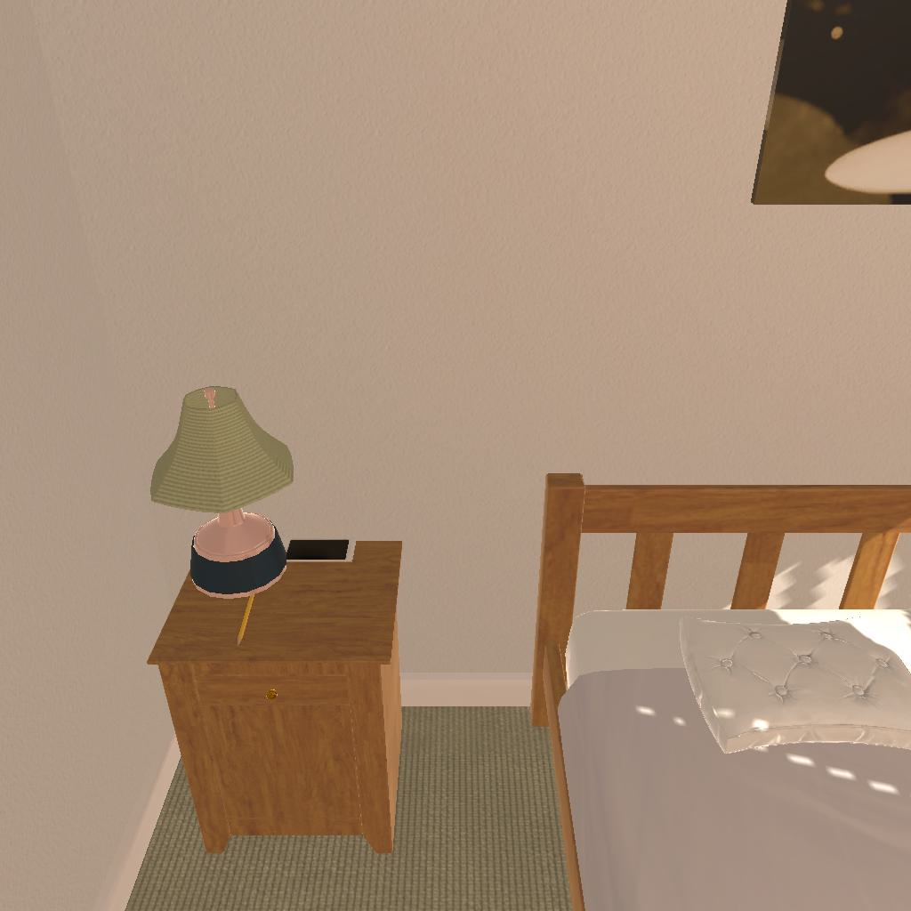

---------------------------------------------------------task: 0---------------------------------------------------------
--------------------------------------------------------------------------------------------------------------------------------------------------------------------
--------------------------------------------------------------------------------------------------------------------------------------------------------------------
Step:--------------------------------------------------------------------------1-------------------------------------------------------------------------------
----------------------------------------
VLM Prompt:
Image1:
Image2:
**Instruction**
1. Analyze the provided images to identify all visible household objects and compare the difference between images (e.h. whether the object is opened or not and taken on hand or not), focusing on those relevant to the task description "look at alarmclock under the desklamp."
2. Use the analysis of images and the task hint "The agent must find an object of the desired type, locate and turn on a light source with the desired object in-hand." to answer the question: what is the most reasonable action in the choices for the task description "look at alarmclock under the desklamp"?
3. Decide and write the answer using the template: The answer is: (i): , where i is the real number. If there is no desired object in images, search every place based on **Initial Observation** to find the object. And if no one is exactly correct, choose a similar answer.
**Initial Observation**
You are in the middle of a room. Looking quickly around you, you can see bed (1), sidetable (1), drawer (1-11), dresser (1), safe (1), laundryhamper (1), garbagecan (1)
**Answer Choices**
(1): go to bed 1
(2): go to drawer 1
(3): go to dresser 1
(4): go to drawer 2
(5): go to drawer 3
(6): go to drawer 4
(7): go to drawer 5
(8): go to drawer 6
(9): go to drawer 7
(10): go to drawer 8
(11): go to drawer 9
(12): go to drawer 10
(13): go to drawer 11
(14): go to safe 1
(15): go to laundryhamper 1
(16): go to garbagecan 1
(17): take pillow 1 from sidetable 1
(18): take cellphone 1 from sidetable 1
(19): take pencil 1 from sidetable 1
(20): use desklamp 1
(21): examine sidetable 1
**Answer**
Let's think step by step by following the instructions.
----------------------------------------
----------------------------------------
Original Response:
First, we analyze the provided images for any visible household objects. Both images show a bed, a sidetable with a desklamp, and part of a picture frame on the wall. Upon closer examination, we can see a pencil lying on the sidetable in both images.
The task description requires us to "look at alarmclock under the desklamp." However, in both images, there is no alarm clock visible on the sidetable under the desklamp. The images are identical, with no difference in the state of any objects (none of the objects are opened, taken in hand, or moved).
Given the task hint that the agent must find an object of the desired type (an alarm clock), locate and turn on a light source (the desklamp) with the desired object in-hand, we can conclude that the alarm clock is not yet in possession, and the desklamp is not yet turned on.
Considering the initial observation that there are various drawers and other furniture items in the room, it is reasonable to search these places to find the alarm clock.
Since the alarm clock is not visible in the images, we need to search for it based on the initial observation. The most logical place to start looking would be the sidetable, as it is common for alarm clocks to be placed on sidetables next to beds.
The answer is: (21): examine sidetable 1.
----------------------------------------
----------------------------------------
>>> Refine Original VLM Response and Get Pure Action: examine sidetable 1
----------------------------------------
-----------------------------------------------------------------
Running time: 70.41627287864685 seconds
Total Money: 0.04801
-----------------------------------------------------------------
-----------------------------------------------------------------
Text Observation:On the sidetable 1, you see a pillow 1, a desklamp 1, a cellphone 1, and a pencil 1.
-----------------------------------------------------------------
UNSUCCEED